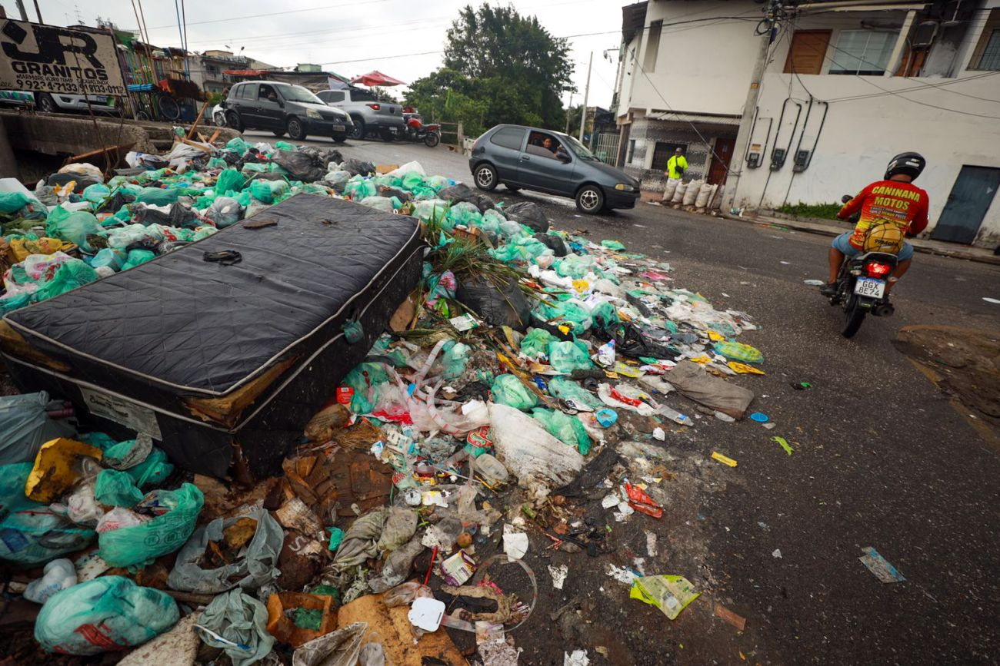
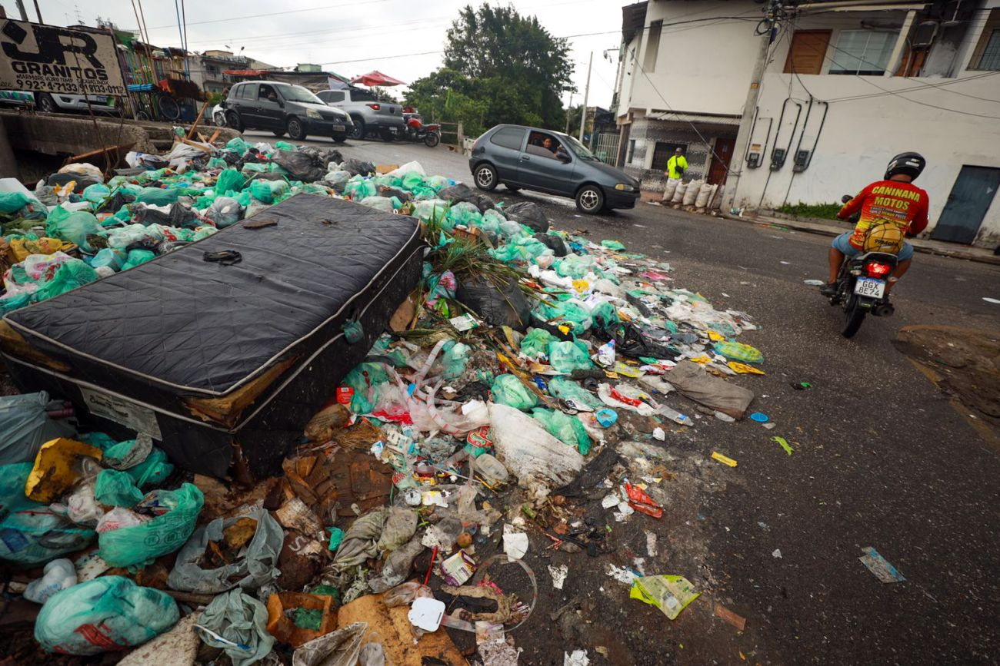

O descarte incorreto de lixo é um crime ambiental que pode causar graves problemas ambientais
Dentre os problemas podemos citar: Poluição do solo, da água e do ar, obstrução de vias públicas e sistemas de drenagem, alagamentos
Veremos abaixo algumas ações para evitar esses descartes incorretos:
Reduzir o consumo de descartáveis
Reutilizar o que puder ser reaproveitado
Reciclar o que for possível
Descartar nas lixeiras apropriadas o que tiver que ser descartado